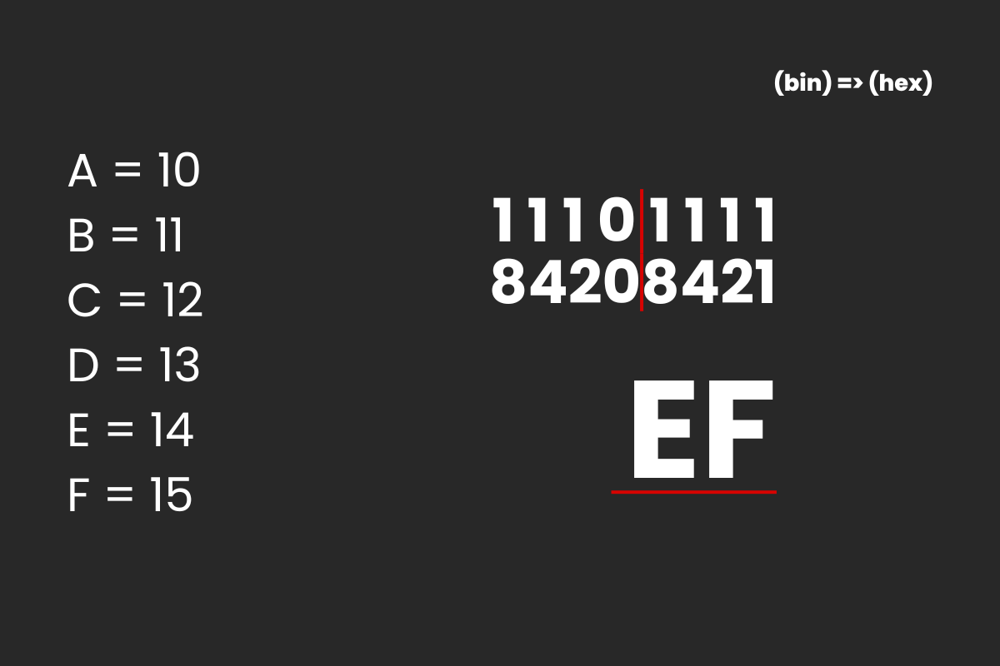
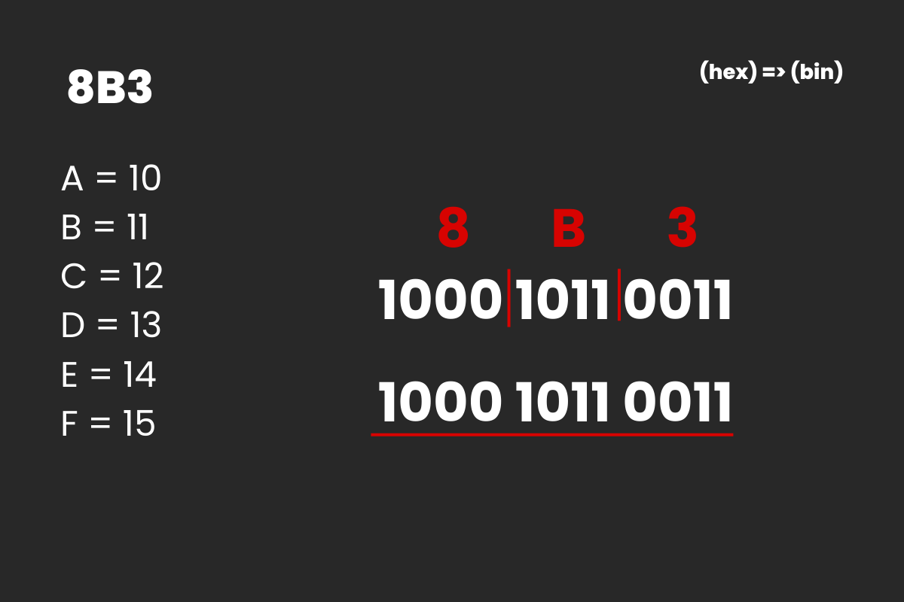
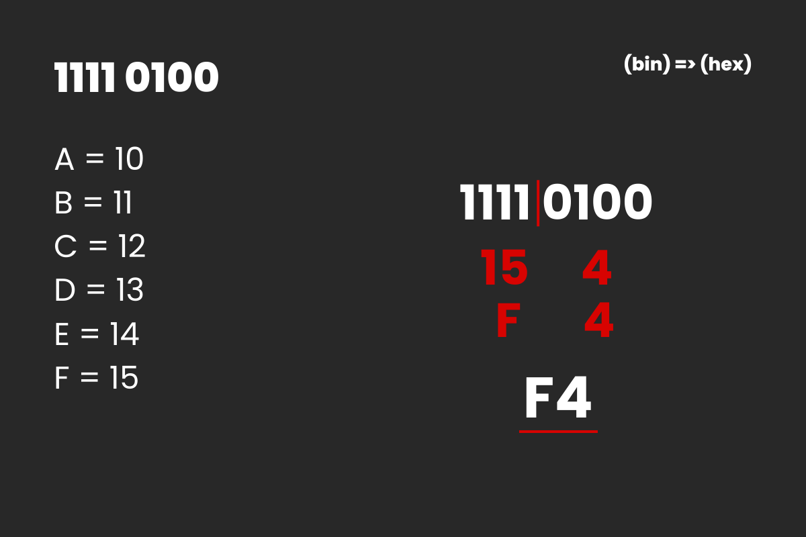
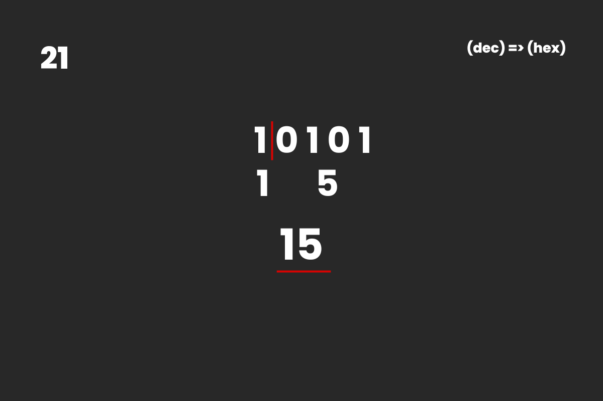
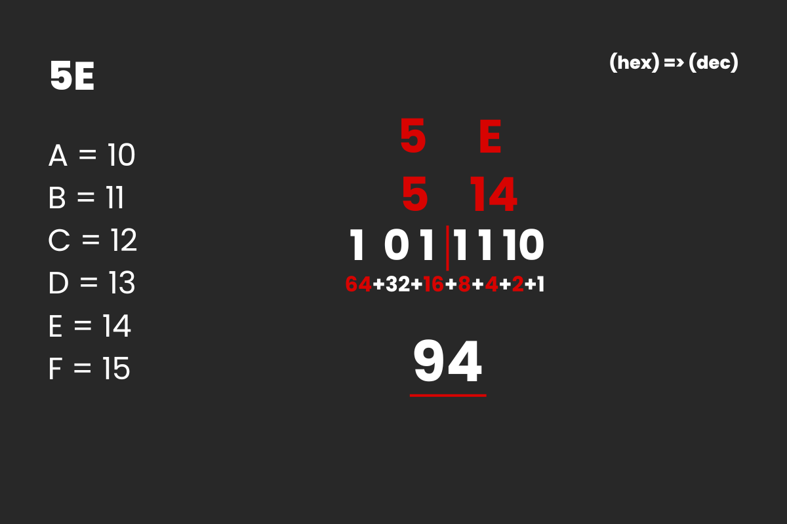

System Hexadecymalny (Szesnastkowy) - zawiera 16 znaków: 0-9 oraz litery A-F odpowiadające libczom 10-15. Tego systemu używa się m.in w zapisie kolorów czy zapisie adresu MAC karty sieciowej
Konwersja z systemu dwójkowego na hexadecymalny
Dzielimy naszą liczbę co 4 bity (licząc od prawej). Następnie obliczamy i zapisujemy każdą z części. Dzięki temu otrzymujemy wynik.
Przykład
Zapisz liczbę 8B3 (16) w systemie binarnym
Każdą z cyfr liczby 8B3(16) zamieniamy na cyfrę w systemie binarnym. Każda cyfra zajmuje 4 bity w zapisie binarnym, więc jeśli cyfra ma mniej niż 4 bity, dopisujemy 0 z lewej strony. W tym przypadku cyfra 3 w zapisie binarnym ma tylko dwa bity, więc dopisujemy 2 zera z lewej.
Przykład
Zapisz liczbę 1111 0100 (2) w systemie heksadecymalnym
Dzielimy naszą liczbę na części co 4 bity (od prawej). Obliczamy każdą część, dzięki czemu otrzymujemy wynik: F4(16)
Przykład
Zapisz liczbę 21 (10) w systemie heksadecymalnym
Liczbę decymalną zamieniamy na liczbę binarną. Następnie dzielimy ją co 4 bity (licząc od prawej). Potem obliczamy i zapisujemy każdą z części. Dzięki temu otrzymujemy wynik.
Przykład
Zapisz liczbę 5E(16) w systemie decymalnym
Każdą z cyfr liczby 8B3(16) zamieniamy na cyfrę w systemie binarnym. Następnie dodajemy wartości wag, tam gdzie występują jedynki i otrzymujemy wynik: 94 (10)